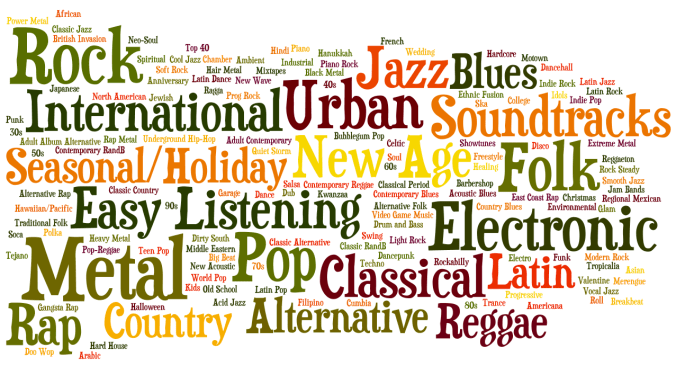

Welcome to Our Project Website!
Hi All! We are Shiyu Wu, Yiran Shen, Yingchen Wang, and Yueying Li. We are junior and senior students of EECS department at the University of Michigan - Ann Arbor. This website is dedicated to our final project of EECS351 Digital Signal Processing course - Music Genre Classification. Have fun of looking through our website!
Introduction
Image somehow in the future, you are a machine learning expert in Sony Music. One day, your boss comes to you and tells you to do some machine learning stuff to improve their music recommender system. Then you start working on it and find out that there're far from enough datasets and end up with labelling musics with different genres manually day and night...
What if there is a machine that can help you detect the music genre automatically? Here comes our project - Music Genre Classification!
The main goal of our project is to classify the audio files as different music genres using high-level and low-level audio features with learning methods.
To be more specific, we mainly explore the following three questions:
- Key audio features for genre detection: features like Melfrequency cepstral coefficients(MFCC) and their performance with K-means clustering / KNN / decision tree methods.
- DSP (digital signal processing) techniques for preprocessing the audio
- The effectiveness of different features and architectures
And we propose two architectures for music genre classifications:
- Combination of different level audio features, including Short time energy, Zero-crossing rate, with a decision tree model.
- MFCC with KNN and K-means clustering.
Our experiment shows that both architectures can yield relatively good results with more than 80% whole accuracy for the detection of music genres: Jazz, Classical, Metal and Pop music. Among them, the optimal resut is provided by random forest model with above 86.75% accuracy.
If you want to check more things in details, feel free to browse other parts!